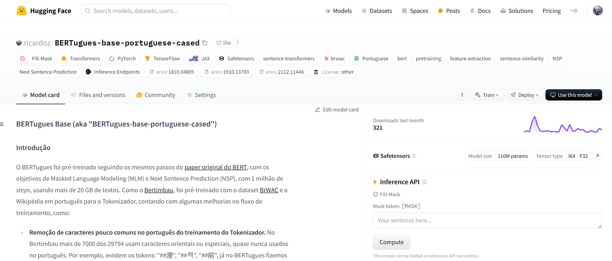
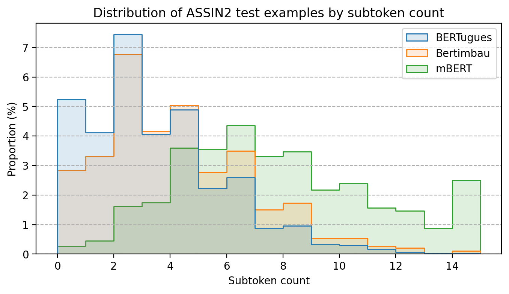

BERTugues
O BERTugues é um modelo de embedding de texto para o português Brasileiro treinato com dados exclusivamente em português.
Use o BERTugues! Acesse pelo Hugging Face!

O BERTugues foi pré-treinado seguindo os mesmos passos do paper original do BERT, com os objetivos de Masked Language Modeling (MLM) e Next Sentence Prediction (NSP), com 1 milhão de steps, usando mais de 20 GB de textos. Como o Bertimbau, foi pré-treinado com o dataset BrWAC e a Wikipédia em português para o Tokenizador, contando com algumas melhorias no fluxo de treinamento, como:
- Remoção de caracteres pouco comuns no português do treinamento do Tokenizador. No Bertimbau mais de 7000 dos 29794 usam caracteres orientais ou especiais, quase nunca usados no português. Por exemplo, existem os tokens: “##漫”, “##켝”, “##前”, já no BERTugues fizemos a remoção desses caracteres antes de treinar o tokenizador;
- 😀 Adição dos principais Emojis no Tokenizador. A Wikipédia conta com poucos Emojis em seu texto, dessa forma um baixo número de Emojis entravam nos Tokens. Como já demonstrado na literatura, eles são importantes numa série de tarefas;
- Filtragem de qualidade dos textos do BrWAC seguindo o modelo heurística proposta pelo paper do modelo Gopher do Google, onde removemos do BrWac textos de baixa qualidade.
Tokenizador Link para o cabeçalho
Com a substituição dos Tokens pouco usados no português conseguimos diminuir a quantidade média de palavras que são quebradas em mais de um Token. No teste utilizando o assin2, mesmo dataset utilizando pelo Bertimbau para fazer o teste na dissertação de mestrado, diminuímos a quantidade média de palavras quebradas por texto de 3,8 para 3,0, no BERT multilinguagem esse número era 7,4.

Performance Link para o cabeçalho
Para comparar a performance testamos um problema de classificação de textos, utilizando a base de reviews de filmes do IMDB, que foi traduzida para o português e possui uma boa qualidade. Neste problema utilizamos a representação do BERTugues da frase e passamos ela por um modelo de Random Forest para realizar a classificação.
Também utilizamos a comparação de performance do paper JurisBERT: Transformer-based model for embedding legal texts, que pré-treina um BERT especialmente para textos de um domínio, usando o BERT multilinguagem e o Bertimbau como baseline. Neste caso utilizamos o código disponibilizado pelo time do paper e adicionamos o BERTugues. O modelo é utilizado para comparar se dois textos são do mesmo assunto ou não.
| Modelo | IMDB (F1) | STJ (F1) | PJERJ (F1) | TJMS (F1) | Média F1 |
|---|---|---|---|---|---|
| BERT Multilinguagem | 72,0% | 30,4% | 63,8% | 65,0% | 57,8% |
| Bertimbau-Base | 82,2% | 35,6% | 63,9% | 71,2% | 63,2% |
| Bertimbau-Large | 85,3% | 43,0% | 63,8% | 74,0% | 66,5% |
| BERTugues-Base | 84,0% | 45,2% | 67,5% | 70,0% | 66,7% |
O BERTugues foi superior em 3 de 4 tarefa em relação ao Bertimbau-base e em 2 das 4 tarefas superior ao Bertimbau-Large, um modelo muito maior (3x mais parâmetros) e custoso computacionalmente.
Exemplo de uso Link para o cabeçalho
Diversos exemplos de uso estão disponíveis no nosso nosso Github. Para uma rápida consulta adicionamos 2 exemplos abaixo:
Predição de palavras mascaradas (Masked Language Modeling):
from transformers import BertTokenizer, BertForMaskedLM, pipeline
model = BertForMaskedLM.from_pretrained("ricardoz/BERTugues-base-portuguese-cased")
tokenizer = BertTokenizer.from_pretrained("ricardoz/BERTugues-base-portuguese-cased", do_lower_case=False)
pipe = pipeline('fill-mask', model=model, tokenizer=tokenizer, top_k = 3)
pipe('[CLS] Eduardo abriu os [MASK], mas não quis se levantar. Ficou deitado e viu que horas eram.')
# [{'score': 0.7272418141365051,
# 'token': 7292,
# 'token_str': 'olhos',
# 'sequence': 'Eduardo abriu os olhos, mas não quis se levantar. Ficou deitado e viu que horas eram.'},
# {'score': 0.2677205801010132,
# 'token': 12761,
# 'token_str': 'braços',
# 'sequence': 'Eduardo abriu os braços, mas não quis se levantar. Ficou deitado e viu que horas eram.'},
# {'score': 0.0007434834260493517,
# 'token': 24298,
# 'token_str': 'óculos',
# 'sequence': 'Eduardo abriu os óculos, mas não quis se levantar. Ficou deitado e viu que horas eram.'}]
Criação de um embedding para uma frase:
from transformers import BertTokenizer, BertModel, pipeline
import torch
model = BertModel.from_pretrained("ricardoz/BERTugues-base-portuguese-cased")
tokenizer = BertTokenizer.from_pretrained("ricardoz/BERTugues-base-portuguese-cased", do_lower_case=False)
input_ids = tokenizer.encode('[CLS] Eduardo abriu os olhos, mas não quis se levantar. Ficou deitado e viu que horas eram.', return_tensors='pt')
with torch.no_grad():
last_hidden_state = model(input_ids).last_hidden_state[:, 0]
last_hidden_state
# tensor([[-1.5727e+00, 5.4707e-01, -2.6169e-01, -3.0714e-01, -9.4545e-01,
# 4.1557e-01, -7.9884e-01, -2.1481e-01, 5.9792e-01, -1.4198e+00,
# 1.1929e-01, 8.0228e-01, 5.4977e-01, 1.2710e+00, -2.9444e-01,
# 1.3398e+00, 1.4413e-01, 8.2983e-01, -8.2349e-02, 1.8593e-01,
Mais informações Link para o cabeçalho
Para mais informações acesso nosso Github!